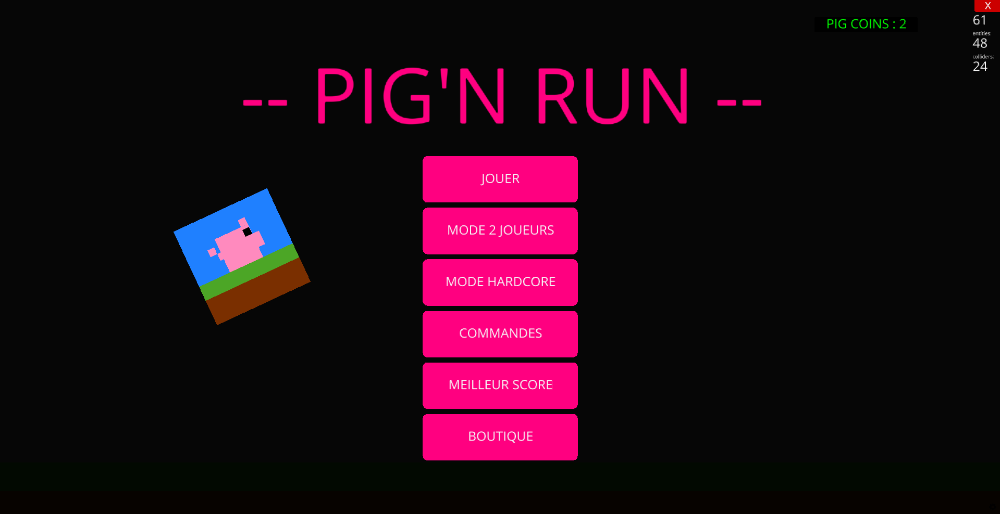

Jouer
Lance une partie et essaie d'aller le plus loin possible.
LE JEU DE PLATEFORME
Cours, saute et relève le défi !
Bienvenue dans l'univers de PIG'N RUN : un jeu de plateforme haut en couleur où chaque partie est un nouveau défi.
TÉLÉCHARGER LE JEUVersion Windows · Gratuit

À PROPOS
PIG'N RUN est un jeu de plateforme avec un univers simple, coloré et une bonne dose de challenge. Lance une partie, tente de battre ton meilleur score et découvre les différents modes disponibles dans le jeu.
APERÇU DU JEU



À TOI DE CHOISIR
Lance une partie et essaie d'aller le plus loin possible.
Partage la partie et relève le défi à deux.
Pour celles et ceux qui veulent un défi supplémentaire.
BIENTÔT DISPONIBLE
Le téléchargement sera ajouté ici dès que la version publique sera publiée.
Windows · Le dossier complet du jeu sera fourni dans une archive ZIP.